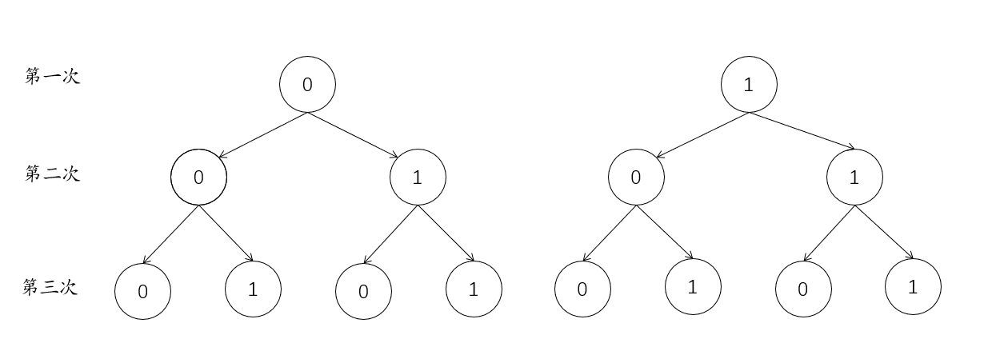

当你掷硬币的时候，哪面朝上？
数字(正面) 或 花(反面)
随机现象(Random phenomena)
在一定条件下，出现的可能结果不止一个，事前不能确切知道哪一个结果一定会出现，但大量重复试验(trial)中其结果又具有统计规律的现象;
偶然性(Uncertainty): 在每一次试验(trial)之前，结果都无法事前确定;
规律性(Regularity): 相同条件下进行多次重复试验(trial)，实验(experiment)的结果会呈现出统计规律.
多次抛硬币，每次的结果是正面朝上还是反面朝上是未知的。但是进行10,000次，大约有一半的次数是正面朝上。

开始抛10次硬币，你可以列出实验(experiment)的所有结果吗？
记录下每次抛硬币的结果。
正面：数字，反面：花
样本空间(Sample space, \(\Omega\))
随机实验(experiment)的所有可能结果构成的集合(set);
\(p(\Omega)\) = 1;
E.g.1. 当你掷一枚硬币，\(\Omega\)={正面，反面}
E.g.2.在新冠疫情的情境中，我们可以将样本空间定义为所有可能感染新冠病毒的人群集合，包括已经感染、未感染但易感染等人群。
你可以预测实验(experiment)中的下一个试次(trial)的结果吗？
事件(Event)
- 实验(experiment)结果的集合(样本空间的一个子集(subset));
- 一个事件A表示硬币落在正面，用A = {正面} 来表示。
- 在新冠疫情中，一个事件可以是指所有感染新冠病毒的人群，或是所有在某一时间点内接种了疫苗的人群。
基本事件(Elementary event)
- 在样本空间中只包含一个结果的事件;
- 任何两个基本事件是互斥的;
- 硬币落在正面或反面的情况，可以用 {正面} 和 {反面} 来表示。
- 某个人是否感染了新冠病毒，或是某个人是否在某一时间点内接种了疫苗。
复合事件(Compound event)
在样本空间中包含一个以上结果的事件;
任何复合事件都可以表示为若干个基本事件的和。
- 在某一时间点内既接种了疫苗又感染了新冠病毒的人群。
- 如果要求抛硬币两次，每次都落在正面的概率，则可以定义一个复合事件B，表示两次抛硬币的结果都是正面。用B = {正面,正面} 来表示。

(注：“0”表示反面，“1”表示正面)
\(2*2*2=8\)
排列(Permutation)
若我们将三枚硬币分别编码为硬币A、B、C
前两次掷硬币结果为正面有几种情况？
排列(Permutation)

\(A_3^2 = 3*2=6\)
排列(Permutation)
从给定个数的元素中取出指定个数的元素进行排序;
从n个不同元素中，任取m(m≤n,m与n均为自然数,下同）个不同的元素按照一定的顺序排成一列，叫做从n个不同元素中取出m个元素的一个排列;
从n个不同元素中取出m(m≤n）个元素的所有排列的个数，叫做从n个不同元素中取出m个元素的排列数，用符号 \(A_n^m\)表示。
\(A_n^m = n!/(n-m)! = n(n-1)(n-2)...(n-m+1)\)
组合(Combination)
掷硬币三次，2次正面朝上的可能有几种？
组合(Combination)
(注：“0”表示反面，“1”表示正面)
\(3\)
组合(Combination)
从给定个数的元素中仅仅取出指定个数的元素，不考虑排序;
从n个不同元素中，任取m(m≤n）个元素并成一组，叫做从n个不同元素中取出m个元素的一个组合;
从n个不同元素中取出m(m≤n）个元素的所有组合的个数，叫做从n个不同元素中取出m个元素的组合数。用符号 \(C_n^m\) 表示。
\(C_n^m = n!/(n-m)!m! = n(n-1)(n-2)...(n-m+1)/m(m-1)(m-2)...1\)
我们抛出的硬币公平吗？也就是说，抛出硬币时，数字朝上的可能性是多少？
频率(Frequency)&概率(Probablity)
频率(Frequency)
- 实验过程中事件发生的次数，除以实验的总次数，一般记为\(f\)。
概率(Probablity)
- 对一个事件发生的可能性有多大，或一个命题是真的可能性有多大的数字描述，一般记为\(p\)。
频率(Frequency)&概率(Probablity)
频率(Frequency)&概率(Probablity)
许多数学家都进行过这项实验：
| 德摩根(De Morgan) |
2048 |
1061 |
0.5181 |
| 蒲丰(Buffon) |
4040 |
2048 |
0.5069 |
| 皮尔逊(Karl Pearson) |
24000 |
12012 |
0.5005 |
频率接近于0.5
独立事件(Independent event)
\(p(A\,and\,B) = p(A \cap B) = p(A)p(B)\)
\(p(A\,or\,B) = p(A \cup B) = p(A) + p(B) - p(A \cap B)\)
互不相容事件(Mutually exclusive event)
\(p(A\,and\,B) = p(A \cap B) = 0\)
\(p(A\,or\,B) = p(A \cup B) = p(A) + p(B) - p(A \cap B)\)
\(= p(A)+p(B)-0 = p(A)+p(B)\)
概率的加法法则(Addition rules in probability)
\(p(A)+p(B) = p(A \cup B)-p(A \cap B)\)
\(p(A)+p(B) = p(A \cup B)\)
概率的乘法法则(Multiplication rules in probability)
\(p(A \cap B) = p(A)p(B)\)
\(p(A \cup B) = p(A)p(B|A)\)
p(B|A) 意为在B发生的情况下，A发生的概率
条件概率(Conditional probability)
\(p(A | B) = {p(A \cap B)}/{p(B)}\)
贝叶斯定理(Bayes’ theorem)
\(p(B|A) = \frac{p(A \cap B)}{p(A)}\)
\(p(A|B) = \frac{p(A \cap B)}{p(B)}\)
\(\to p(A|B) = \frac{p(B|A)p(A)}{p(B)}\)